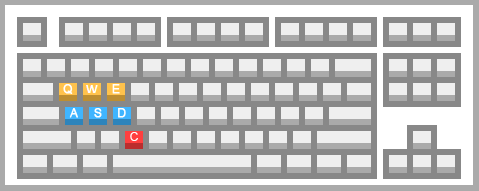

Help
Twitter Annotator is an UI-Prototype for annotation tweets. Currently it has a dummy back-end to showcase the concept. This page will help you to use the prototype and showcase all the features. For developers see the bottom of this page.
Interface

1
Previous Tweet
If you want to navigate to the previous tweet, click on this button. For example you want to change a previous choice or look back.
2
Pause
If you want to take a break, click on this button. This will inform the system of your break, so afterward we can see your active phases.
Features
Keyboard shortcuts
| Q | previous Tweet |
| E | next Tweet |
| A | set Irrelevant |
| S | set Neutral |
| D | set Opinionated |
| Space | pause/resume |
| W | toggle Help |
Dev